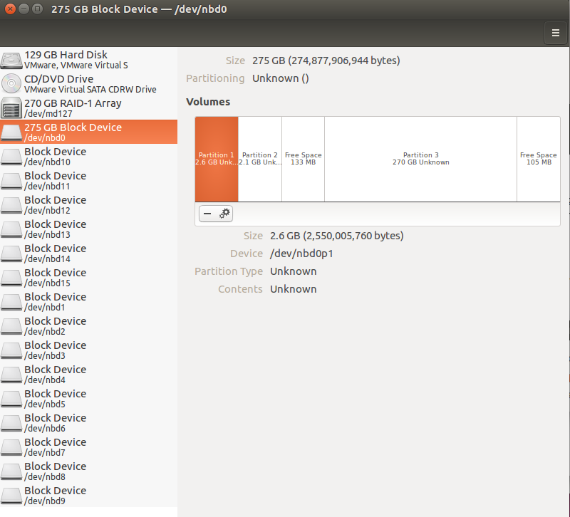
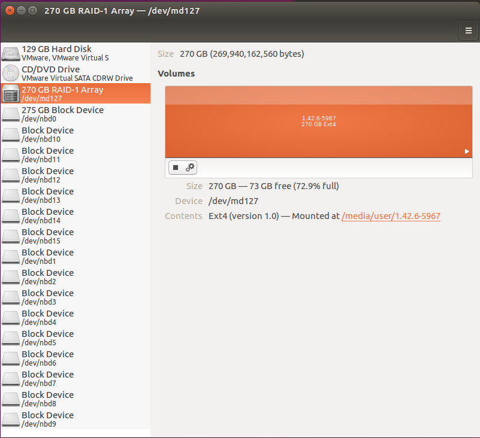
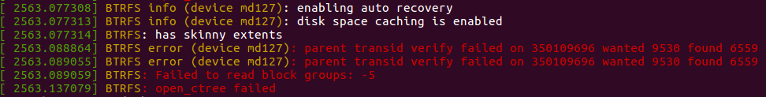

<!DOCTYPE html>
<html>
<head><meta name="generator" content="Hexo 3.9.0">
  <meta charset="utf-8">
  
<!-- Google Analytics -->
<script type="text/javascript">
(function(i,s,o,g,r,a,m){i['GoogleAnalyticsObject']=r;i[r]=i[r]||function(){
(i[r].q=i[r].q||[]).push(arguments)},i[r].l=1*new Date();a=s.createElement(o),
m=s.getElementsByTagName(o)[0];a.async=1;a.src=g;m.parentNode.insertBefore(a,m)
})(window,document,'script','//www.google-analytics.com/analytics.js','ga');

ga('create', 'UA-86850493-1', 'auto');
ga('send', 'pageview');

</script>
<!-- End Google Analytics -->


  
  <title>虚拟黑群晖恢复文件小计 | Geek boood&#39;s blog</title>
  <meta name="viewport" content="width=device-width, initial-scale=1, maximum-scale=1">
  <meta name="description" content="警告！警告！警告！本文仅供参考与研究，重要数据恢复请寻求专业机构帮助。在恢复数据前，建议将原始磁盘或虚拟磁盘文件多克隆几份。按理说，虚拟黑裙晖应该会比物理黑裙晖稳定不少（自己曾有物理黑裙晖掉电就损毁的经历，反反复复几十次，人快疯掉了），但是在物理机磁盘出现坏道等问题后，虚拟磁盘文件也会损坏。">
<meta property="og:type" content="article">
<meta property="og:title" content="虚拟黑群晖恢复文件小计">
<meta property="og:url" content="https://geekboood.github.io/2017/01/27/虚拟黑群晖恢复文件小计/index.html">
<meta property="og:site_name" content="Geek boood&#39;s blog">
<meta property="og:description" content="警告！警告！警告！本文仅供参考与研究，重要数据恢复请寻求专业机构帮助。在恢复数据前，建议将原始磁盘或虚拟磁盘文件多克隆几份。按理说，虚拟黑裙晖应该会比物理黑裙晖稳定不少（自己曾有物理黑裙晖掉电就损毁的经历，反反复复几十次，人快疯掉了），但是在物理机磁盘出现坏道等问题后，虚拟磁盘文件也会损坏。">
<meta property="og:locale" content="default">
<meta property="og:image" content="https://geekboood.github.io/2017/01/27/虚拟黑群晖恢复文件小计/1.png">
<meta property="og:image" content="https://geekboood.github.io/2017/01/27/虚拟黑群晖恢复文件小计/2.png">
<meta property="og:image" content="https://geekboood.github.io/2017/01/27/虚拟黑群晖恢复文件小计/3.png">
<meta property="og:updated_time" content="2019-07-31T04:07:25.682Z">
<meta name="twitter:card" content="summary">
<meta name="twitter:title" content="虚拟黑群晖恢复文件小计">
<meta name="twitter:description" content="警告！警告！警告！本文仅供参考与研究，重要数据恢复请寻求专业机构帮助。在恢复数据前，建议将原始磁盘或虚拟磁盘文件多克隆几份。按理说，虚拟黑裙晖应该会比物理黑裙晖稳定不少（自己曾有物理黑裙晖掉电就损毁的经历，反反复复几十次，人快疯掉了），但是在物理机磁盘出现坏道等问题后，虚拟磁盘文件也会损坏。">
<meta name="twitter:image" content="https://geekboood.github.io/2017/01/27/虚拟黑群晖恢复文件小计/1.png">
  
    <link rel="alternate" href="/atom.xml" title="Geek boood&#39;s blog" type="application/atom+xml">
  
  
    <link rel="icon" href="/favicon.png">
  
  
    <link href="//fonts.googleapis.com/css?family=Source+Code+Pro" rel="stylesheet" type="text/css">
  
  <link rel="stylesheet" href="/css/style.css">
</head>
</html>
<body>
  <div id="container">
    <div id="wrap">
      <header id="header">
  <div id="banner"></div>
  <div id="header-outer" class="outer">
    <div id="header-title" class="inner">
      <h1 id="logo-wrap">
        <a href="/" id="logo">Geek boood&#39;s blog</a>
      </h1>
      
    </div>
    <div id="header-inner" class="inner">
      <nav id="main-nav">
        <a id="main-nav-toggle" class="nav-icon"></a>
        
          <a class="main-nav-link" href="/">Home</a>
        
          <a class="main-nav-link" href="/archives">Archives</a>
        
      </nav>
      <nav id="sub-nav">
        
          <a id="nav-rss-link" class="nav-icon" href="/atom.xml" title="RSS Feed"></a>
        
        <a id="nav-search-btn" class="nav-icon" title="Search"></a>
      </nav>
      <div id="search-form-wrap">
        <form action="//google.com/search" method="get" accept-charset="UTF-8" class="search-form"><input type="search" name="q" class="search-form-input" placeholder="Search"><button type="submit" class="search-form-submit">&#xF002;</button><input type="hidden" name="sitesearch" value="https://geekboood.github.io"></form>
      </div>
    </div>
  </div>
</header>
      <div class="outer">
        <section id="main"><article id="post-虚拟黑群晖恢复文件小计" class="article article-type-post" itemscope itemprop="blogPost">
  <div class="article-meta">
    <a href="/2017/01/27/虚拟黑群晖恢复文件小计/" class="article-date">
  <time datetime="2017-01-26T16:00:00.000Z" itemprop="datePublished">2017-01-27</time>
</a>
    
  </div>
  <div class="article-inner">
    
    
      <header class="article-header">
        
  
    <h1 class="article-title" itemprop="name">
      虚拟黑群晖恢复文件小计
    </h1>
  

      </header>
    
    <div class="article-entry" itemprop="articleBody">
      
        <p>警告！警告！警告！本文仅供参考与研究，重要数据恢复请寻求专业机构帮助。在恢复数据前，建议将原始磁盘或虚拟磁盘文件多克隆几份。<br>按理说，虚拟黑裙晖应该会比物理黑裙晖稳定不少（自己曾有物理黑裙晖掉电就损毁的经历，反反复复几十次，人快疯掉了），但是在物理机磁盘出现坏道等问题后，虚拟磁盘文件也会损坏。</p>
<a id="more"></a>
<p>需要一台Linux操作系统的电脑，如果没有的话，用虚拟机装一台。</p>
<pre><code>sudo apt install qemu-utils
sudo modprobe nbd  //加载nbd模块，加载后dev目录下出现一堆以nbd开头的文件，如下图中左面那一长列
sudo qemu-nbd -c /dev/nbd0 /path/to/the/file</code></pre><p>命令执行后应该会出现如下图的设备<br><br>其实如果你将虚拟磁盘文件直接挂载到虚拟机的话，上面的步骤是可以省略的</p>
<pre><code>sudo mdadm -Asf &amp;&amp; vgchange -ay</code></pre><p>之后就会出现如下图的卷<br><br>然后将这个卷挂载即可<br>完成文件的备份后，将分区卸载，在执行以下命令来卸载虚拟磁盘</p>
<pre><code>sudo qemu-nbd -d /dev/nbd0</code></pre><p>至此为止，vdi格式的虚拟磁盘文件已经导完数据了。</p>
<p>另一个vmdk格式的虚拟磁盘文件就没这么顺利，在作死的使用最新的Btrfs后，里面分区死活也挂载不上，在查看dmesg后，发现坏道破坏了虚拟硬盘文件。<br><br>在查阅互联网并使用很多方法都没有成功的修复这个分区，最后使用</p>
<pre><code>btrfs restore /path/to/your/device /path/to/your/backup/device -i</code></pre><p>命令把没有受损的文件恢复出来。这里使用-i参数强制忽略恢复过程中的错误。</p>
<p>PS：这块西数500G绿盘刚刚到2W小时就挂了。。。就挂了。。。<br>PS1：群晖最新的6.0.2版本里有很多变更，比如禁止使用root登陆（虽然现在有可以改root密码并登陆的方法），使用nfs挂载的目录无法在video station或者photo station中索引（这在5.2版里面很方便，尤其虚拟黑群晖，直接映射物理机的目录就好）。</p>

      
    </div>
    <footer class="article-footer">
      <a data-url="https://geekboood.github.io/2017/01/27/虚拟黑群晖恢复文件小计/" data-id="cjyqra6c700076xsfe680vbq7" class="article-share-link">Share</a>
      
      
    </footer>
  </div>
  
    
<nav id="article-nav">
  
    <a href="/2017/02/03/在Python中使用PycURL替代requests来提高网页抓取效率/" id="article-nav-newer" class="article-nav-link-wrap">
      <strong class="article-nav-caption">Newer</strong>
      <div class="article-nav-title">
        
          在python中使用pycurl替代requests来提高网页抓取效率
        
      </div>
    </a>
  
  
    <a href="/2015/07/17/通过chroot将OpenWrt和OpenMediaVault合体/" id="article-nav-older" class="article-nav-link-wrap">
      <strong class="article-nav-caption">Older</strong>
      <div class="article-nav-title">通过chroot将OpenWrt和OpenMediaVault合体</div>
    </a>
  
</nav>

  
</article>

</section>
        
          <aside id="sidebar">
  
    

  
    

  
    
  
    
  <div class="widget-wrap">
    <h3 class="widget-title">Archives</h3>
    <div class="widget">
      <ul class="archive-list"><li class="archive-list-item"><a class="archive-list-link" href="/archives/2019/07/">July 2019</a></li><li class="archive-list-item"><a class="archive-list-link" href="/archives/2017/09/">September 2017</a></li><li class="archive-list-item"><a class="archive-list-link" href="/archives/2017/03/">March 2017</a></li><li class="archive-list-item"><a class="archive-list-link" href="/archives/2017/02/">February 2017</a></li><li class="archive-list-item"><a class="archive-list-link" href="/archives/2017/01/">January 2017</a></li><li class="archive-list-item"><a class="archive-list-link" href="/archives/2015/07/">July 2015</a></li></ul>
    </div>
  </div>


  
    
  <div class="widget-wrap">
    <h3 class="widget-title">Recent Posts</h3>
    <div class="widget">
      <ul>
        
          <li>
            <a href="/2019/07/30/BERT相关的一些实践/">BERT相关的一些实践</a>
          </li>
        
          <li>
            <a href="/2019/07/30/用Kubernetes建立实验集群/">用Kubernetes建立实验集群</a>
          </li>
        
          <li>
            <a href="/2019/07/30/移动端深度学习的现状与分析/">移动端深度学习的现状与分析</a>
          </li>
        
          <li>
            <a href="/2017/09/04/微博与Elastic的亿级数据实践/">微博与elastic的亿级数据实践</a>
          </li>
        
          <li>
            <a href="/2017/03/25/使用微博语料训练词向量/">使用微博语料训练词向量</a>
          </li>
        
      </ul>
    </div>
  </div>

  
</aside>
        
      </div>
      <footer id="footer">
  
  <div class="outer">
    <div id="footer-info" class="inner">
      &copy; 2019 Geek boood<br>
      Powered by <a href="http://hexo.io/" target="_blank">Hexo</a>
    </div>
  </div>
</footer>
    </div>
    <nav id="mobile-nav">
  
    <a href="/" class="mobile-nav-link">Home</a>
  
    <a href="/archives" class="mobile-nav-link">Archives</a>
  
</nav>
    

<script src="//ajax.googleapis.com/ajax/libs/jquery/2.0.3/jquery.min.js"></script>


  <link rel="stylesheet" href="/fancybox/jquery.fancybox.css">
  <script src="/fancybox/jquery.fancybox.pack.js"></script>


<script src="/js/script.js"></script>


  </div>
</body>
</html>